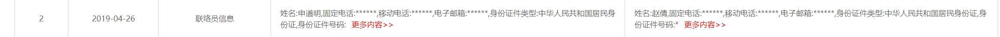

2020/05/21
这个迭代的单，逻辑上不难理解，根据某些逻辑，打开联系人的时候默认选中以IM（系统消息）的形式发送，三个端都需要改动，但是是在以前的老代码上改动。 需要实现的效果

在以前老项目上改动，就需要先理解原先代码的逻辑，这就让人很奔溃，老代码字段很多很多，而且没有注解或注解很少（公司规定），这就提高了开发的难度，虽然每个迭代开始之前会写开发文档，但是我觉得这样做主要目的是为了服务开发流程的，对后续去他人的开发参考价值并不大。我需要理解每个字段的含义（草泥马）。
在写代码的过程种发现了几个问题：
变量的设计
一个大的变量里面存储了这个结构的所有数据，上面展示的只是冰山一角，许多请求的数据都塞到一个变量里面。我需要去查找这个变量里面的某个字段需要多层遍历，这就让人觉得很恶心。归根结底就是怎么去组织代码里的数据结构，发现了问题，就要解决问题，挖坑待填。
不同端对于同一功能的设计
这次迭代是要对三个段进行改动，在写代码的过程中发现，尽管页面交互大致相同，但不同端的代码实现却不尽相同（
what fuck）。优雅的代码书写
看以前的老代码，代码还是存在一些问题。
回调地狱
我终于遇到了回调地狱，每次请求之后都通过回调函数进行逻辑处理，不断的嵌套。。。。。
定位不清的文件

这两个文件，一个是用来视图的定义（communication_vm），一个写具体逻辑的（communication_new），但是在写代码的过程中，发现这两个文件串了味。
在老功能基础上的开发
这次开发在验收这次修改的功能的时候，由于以前的一些设计跟这次的修改存在冲突，QA测试的时候觉得是这次迭代的功能没完善。还有在开发的过程中发现的一些问题都是口头描述，对后续功能上的看法出现冲突。
总结
配套文档缺少
代码质量不高，当时是怎么过review的？？？，设计的时候须要考虑到可扩展性，设计模式的应用。
对于在老代码的改动也尽量采用增量开发（开闭原则），提前对以前的功能对本次修改的影响，并且还要有相应的记录。
2020/06/03
来了来了，live bug来了，还是上一个迭代的单，今天在live上出bug了，原因是之前没有关注的可操作入口导致的。
总结一下：
- 对于老代码的更改，在不明白全部逻辑的情况下大刀阔斧的更改，但是全部理清老代码的逻辑也需要时间的，是否可行还不一定，另一种想法还是增量开发，但是对于需求跟以前的代码有冲突，进行增量开发不一定可行，这又要求对整体的把握，总之开始写代码之前，一定要去看代码，理清逻辑。
- 还是粗心。今天再去测的时候发现有些接口还在报404，自测的时候为了省事，自测一部分，导致后面浪费更多时间。
2020/07/25
到新的公司都一周多了，也要对最近遇到的问题，进行总结一下了。
- 搜索框实现像百度一样的效果
当搜索框获得焦点的时候，需要根据搜索框里面的内容显示搜索结果，当搜索框失去焦点的时候需要隐藏搜索结果，关于这一点我还写了一篇关于搜索优化的，写的不错哦！
{% post_link 代码优化-抖动节流 %}基本思路是利用onBlur 和 onFocus ，控制结果框的显示，但是如果你直接这样写：
//setIsshow()是给isshow赋值的，isshow控制结果框的显示与否
onBlur={() => setIsshow(false)}
onFocus={e => e.target.value.length > 0 && setIsshow(true)}就会出现这种情况：
点击结果，不能发生跳转，其实是因为当input失去焦点的时候，isshow就被置成false了，下面的结果框dom其实已经不存在了，我想到了一个解决方案：
延迟执行onBlur的处理函数：利用setTimeout，于是代码变成了这样
onBlur={() => (timeOut = setTimeout(() => setIsshow(false), 100))}
onFocus={e => e.target.value.length > 0 && setIsshow(true) && clearTimeout(timeOut)}
//////////////
当然要记得清除计时器哦，我觉得这不是唯一的解决办法，这几天看看以前的项目找一个更好的解决办法。
最终的效果：
好像还有一个小问题：某些情况下不能完成跳转，暂时还不清楚
改成这样就可以了
onBlur={() => {
isshow &&
(timeOut = setTimeout(() => setIsshow(false), 500, () => {
clearTimeout(timeOut), (timeOut = null);
}));
}}
onFocus={e => e.target.value.length > 0 && setIsshow(true)}- 展示内容过长需要隐藏好的实现方法
看一下现在项目中的效果：

这就是隐藏了一个寂寞，我觉得实现这种功能需要实现下面几点：
- 合理断句，不能直接将一段话一刀两段
- 当隐藏的部分很短时，是不是要考虑其他实现方法（就像图片上那样）
#2020/08/13
代码优化-刷新界面后怎么保存用户数据#2020/12/19
一直想总结下最近的项目经验，但是懒就拖到现在，最近两个月做项目的时候挫败感挺强的，深感到自己太菜了。

这是前一个月做的项目，总得来说上面三个圆环的联动以及折线图的数据联动。下面的统计时间限制，开始时间不能大于结束时间，结束时间不能早于开始时间。
我碰到的问题：
这个页面其实是一个改版，接口大多数复用以前的接口，圆环里面的数据本来不是一个接口返回的，也就是说每一段小圆弧是一个接口返回的，一个圆环有十个小圆弧组成，需要请求十次才能将数据全部请求完，我那时候觉得能复用就复用，就直接沿用以前的接口，面临的一个问题是怎么判断十次请求全部结束，没请求一次就将数据塞到一个变量里面去，用watch观察，每变一次就执行指定的方法，反正最后的效果像屎一样（代码层次以及效果层次的双重），最后还是新写了一个接口返回全部数据解决的。
环状图、折线图以及柱状图的使用很不熟练，这种展示大屏项目，使用的大量的echarts，而我却对它不熟悉，致命的缺点。因为以前代码里面用过这些chart，我就致敬了原来的代码，但是那些代码本身也有问题，浪费了我很多时间。

- 时间限制也比较简单，用iview提供的disabledDate就好，注意的是要使用箭头函数不然访问不到this（好像是这样）
datePickerOptionsStart: {
disabledDate: date=> {
let time = moment(date).format('YYYY-MM')
let limitTime = this.endTime ==="" ? this.availableTimeList[this.availableTimeList.length-1] : this.endTime
if(this.availableTimeList.includes(time) && moment(time).isSameOrBefore(limitTime)) return false
return true
}
},
datePickerOptionsEnd: {
disabledDate: date=> {
let time = moment(date).format('YYYY-MM')
let limitTime = this.startTime ==="" ? this.availableTimeList[0] : this.startTime
if(this.availableTimeList.includes(time) && moment(time).isSameOrAfter(limitTime)) return false
return true
}
}粗心大意我的天敌
在做环状图轮播的时候发现有时候它会乱转，这个问题用了我起码一个上午，期间还想到是不是操作太快程序执行速度赶不上我手速，接着就想出使用任务队列去解决还有其他一堆骚操作，但统统以失败告终，然后在一位同事的指点下发现我代码clearInterval()里面的参数少写了一个字母，我顿时吐血了，然鹅最近做的一个界面也出现了同样的问题，可以打死我自己了。
这是上个月的总结：对于常用的东西不熟练以及粗心

这个页面做了快一周了，发现了很多问题
系统中常见的组件可以封装起来（也有封装好的组件，但是我不知道，导致开发效率低下，每次都重复造轮子）
技术不太行，对于滚动、echarts的使用还不是很熟练
有一个文件的代码竟然写了快一千多行，有点问题
没有跟ui沟通，增加开发成本（时间组件）
粗心（定时器的清除少写了有个字母，浪费了半个小时）
改善计划：
将常用的模块封装成组件
review代码，看看哪里写的不好
这是我前天的反思，轮播的环状饼图和自动滚动的列表起始在项目里早就封装好了的，虽然饼图还是自己写的，但用到了自动滚动列表，出现这种现象的原因是没有开发文档以及自己对存在的工具方法不熟悉。前期没有很好的沟通也导致了我浪费了大量时间，我觉得ui出设计稿的同时也要跟前端沟通，看看怎样设计才能更快更好的完成，有这个想法是因为时间选择组件

完全可以使用组件库已有的，但这个设计就相当于让我自己重新去写一个新的组件，不是不能完成，是没有必要